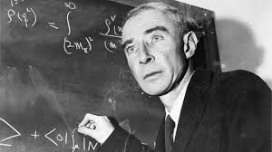

Oppenheimer |
|
|  | |
|
J. Robert Oppenheimer (lahir Julius Robert Oppenheimer; /ˈɒpənhaɪmər/ OP-en-hy-mer; 22 April 1904 – 18 Februari 1967) adalah seorang fisikawan teoretis Amerika yang menjabat sebagai direktur Laboratorium Los Alamos dalam Proyek Manhattan selama Perang Dunia II. Ia sering disebut sebagai "bapak bom atom" karena perannya dalam mengawasi pengembangan senjata nuklir pertama. |
|
| A.M.Yusran Mazidan | |